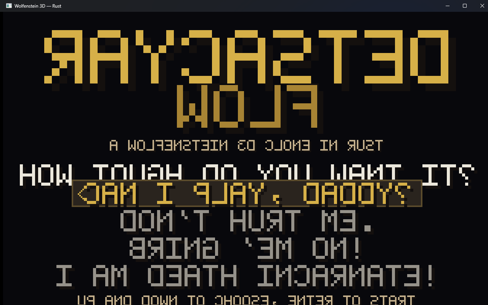
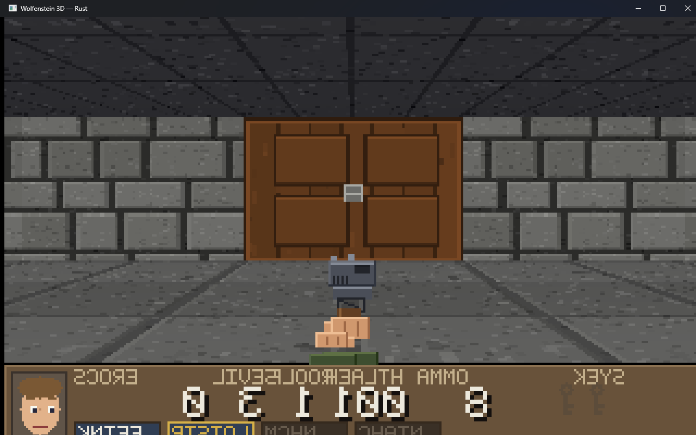
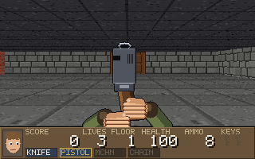
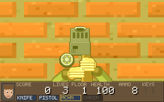
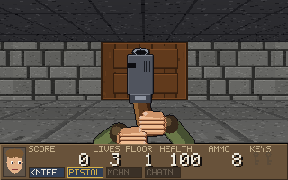
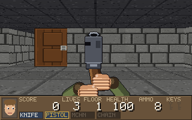
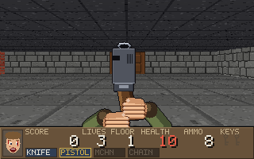
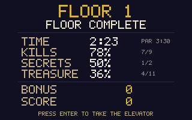
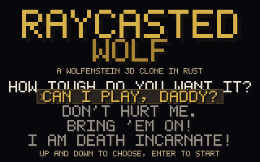

Frames rendered headlessly by cargo run -p wolf3d --bin frames -- --frames, and
two real screenshots of the running window. Everything you see is generated by the game at
startup: no image files ship with it.
The real thing

Title screen. Four difficulty tiers, the original's wording.

In the cell block. 320x200 scaled up, status bar and all.
Scripted frames

Spawn. Floor 1, pistol drawn, the door east of the cell.

Firefight. Machine gun, muzzle flash over the whole view.

Under fire. A guard on the fire frame of its four frame attack: raise, aim, fire, recover.

Door. Half open: the engine slides the texture into the wall frame.

Hurt. Twelve health left, so the status-bar face is at its worst.

Tally. Kill, secret and treasure percentages between floors.

Difficulty. The same screen as above, drawn without a window.